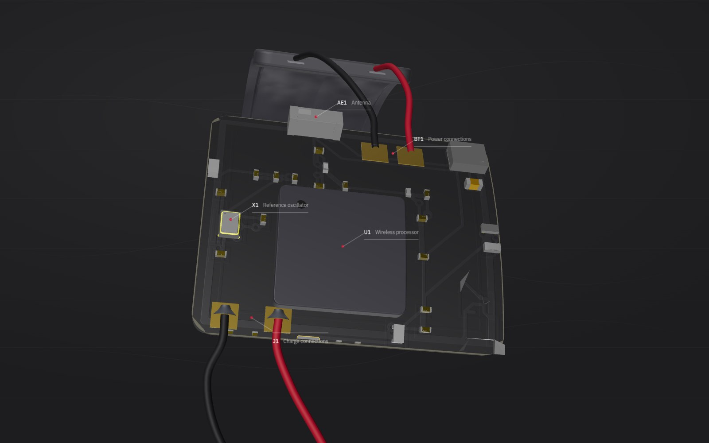

Built to disappear. Impossible to ignore.
A 17 × 15 mm board, a millimetre-thick cell and a magnetic charge connector — the whole system, curved into the wall of the strap.
It thinks before it speaks.
Avalon is our combat sports motion classifier, and it runs entirely on the band. Every strike is identified where it happens, at the lowest power draw we have been able to build — which is the reason a 100 mAh cell lasts a full session and the reason there is no phone in the loop.
- On-device classification
- Nine axes at 1,000 Hz
- Millisecond timestamps
- A full session on 100 mAh
- No phone in the loop
- 17 × 15 mm mainboard
- 0.4 mm flexible substrate
- 9-axis inertial sensing
- 1,000 Hz sampling
- Up to 8 hours per charge
No port, no buttons, no screen. It charges by magnetic contact and otherwise there is nothing to operate.
Three steps. Zero friction.
Pull on the Impkt Band wraps before your session. No calibration ritual. No separate hardware to charge. Just wrap and go — the same way you always have.
Hit the bags, spar, drill. Impkt Band tracks every strike automatically at 1,000 samples per second. It measures what you can't — reaction time, punch velocity, output pattern.
Open the coach dashboard mid-session or review it after. See exactly what happened, broken down per round, per fighter, per strike type. Data-driven decisions from day one.
Engineered from scratch.
Every component of the Impkt Band sensor was designed in-house. No off-the-shelf fitness module. A custom-built 9-axis IMU fused with a proprietary signal processing stack — purpose-built for the biomechanics of combat sports, not adapted from a step counter.
- Form factor Integrated wrap module
- Sensor 9-axis IMU (accel + gyro + mag)
- Sample rate 1,000 Hz
- Battery 8 hours
- Connectivity Bluetooth LE 5.2
- Water rating IPX5
You train. It measures.
Impkt Band doesn't ask you to change anything. Wear it. Train the way you always have. Everything else is handled.
- No app required during training
- Reaction time tracked per round
- Punch output broken down by type
- Personal bests tracked over time
- See what your coach sees, post-session
You watch. It quantifies.
Everything you already see in the gym — now with numbers behind it. Make calls with evidence, not just instinct.
- Live session dashboard, no app for athletes
- Side-by-side fighter comparisons
- Fatigue patterns across rounds
- Historical session archive per fighter
- Export reports for athlete review
The numbers.
Millisecond-accurate strike timestamp, no averaging or smoothing applied.
1,000 data points per second from a 9-axis inertial measurement unit.
Continuous active use. Charges by magnetic contact in under 90 minutes.
Bluetooth Low Energy 5.2. Real-time data to coach dashboard. No Wi-Fi required.
Rated for sweat and water spray. Built for the realities of a training environment.
Fully integrated into the wrap. Imperceptible during training.
Be first.
Athletes, coaches and gyms — early access is opening now.
Application received — we'll be in touch.
Questions before you apply?
We reply to every message personally.
hello@impktband.com